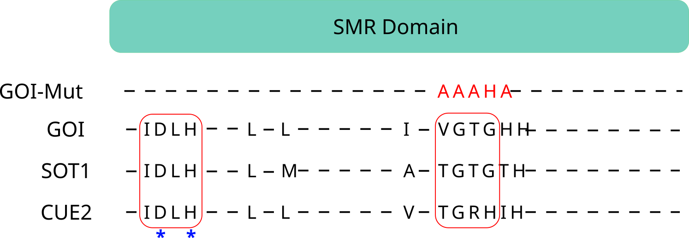

Modified from Matthes et al. (2020)
Data not shown

Fold change in CAGEseq abundance was measured between two boron conditions (0.3 and 100μM) and compared between two different genotypes (Col-0 and goi).
mRNAs with a registered 2> fold change in a Col-0 background (and almost no change in the goi background, \(x<0.5\)) were considered as potential candidates of GOI-mediated regulation (red dots ).
- Hovering over the dots shows the mRNA name and the degradome comparison where that mRNA was found.
- To show/hide this box click on the icon on the bottom left corner
- To show the speaker notes click the letter S
Fold change in CAGEseq abundance was measured between two genotypes (Col-0 and goi) and compared between in two boron concentrations (0.3 and 100μM) .
mRNAs with a registered 2> fold change under either boron concentration were considered as potential candidates of GOI-mediated regulation (red dots ).
- Note the magnitude of change for NIP5;1 under 100μM B (upper right section).
- To show/hide this box click on the icon on the bottom left corner
mRNA degradation intermediates accumulate in the EJC binding region (20-25nt upstream the exon-junction) in different genotypes exposed to 100μM B.
The accumulation is reduced in the absence of the exonuclease XRN4 which degrades exposed mRNAs until it reaches an obstacle (e.g. EJC).
A greater reduction is observed in the absence of GOI which could support its putative endonuclease activity
- Clicking on the legend elements will toggle its visibility
- To show/hide this box click on the icon on the bottom left corner
Created by ssl